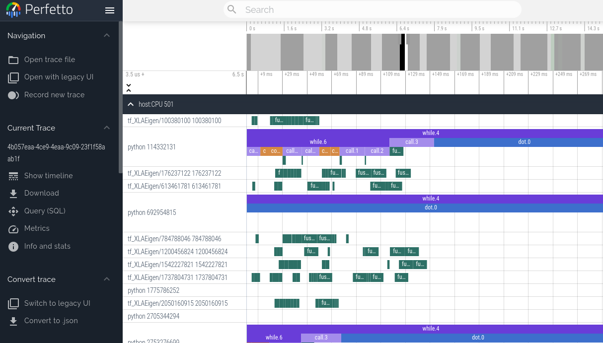
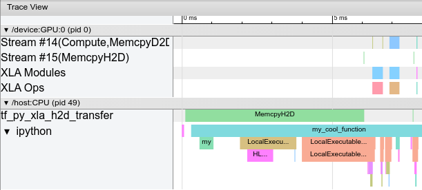

Profiling computation#
Viewing program traces with Perfetto#
We can use the JAX profiler to generate traces of a JAX program that can be visualized using the Perfetto visualizer. Currently, this method blocks the program until a link is clicked and the Perfetto UI loads the trace. If you wish to get profiling information without any interaction, check out the XProf profiler below.
with jax.profiler.trace("/tmp/jax-trace", create_perfetto_link=True):
# Run the operations to be profiled
key = jax.random.key(0)
x = jax.random.normal(key, (5000, 5000))
y = x @ x
y.block_until_ready()
After this computation is done, the program will prompt you to open a link to
ui.perfetto.dev. When you open the link, the Perfetto UI will load the trace
file and open a visualizer.

Program execution will continue after loading the link. The link is no longer valid after opening once, but it will redirect to a new URL that remains valid. You can then click the “Share” button in the Perfetto UI to create a permalink to the trace that can be shared with others.
Remote profiling#
When profiling code that is running remotely (for example on a hosted VM), you need to establish an SSH tunnel on port 9001 for the link to work. You can do that with this command:
$ ssh -L 9001:127.0.0.1:9001 <user>@<host>
or if you’re using Google Cloud:
$ gcloud compute ssh <machine-name> -- -L 9001:127.0.0.1:9001
Manual capture#
Instead of capturing traces programmatically using jax.profiler.trace, you can
instead start a profiling server in the script of interest by calling
jax.profiler.start_server(<port>). If you only need the profiler server to be
active for a portion of your script, you can shut it down by calling
jax.profiler.stop_server().
Once the script is running and after the profiler server has started, we can manually capture and trace by running:
$ python -m jax.collect_profile <port> <duration_in_ms>
By default, the resulting trace information is dumped into a temporary directory
but this can be overridden by passing in --log_dir=<directory of choice>.
Also, by default, the program will prompt you to open a link to
ui.perfetto.dev. When you open the link, the Perfetto UI will load the trace
file and open a visualizer. This feature is disabled by passing in
--no_perfetto_link into the command. Alternatively, you can also point
Tensorboard to the log_dir to analyze the trace (see the
“XProf (Tensorboard Profiling)” section below).
XProf (TensorBoard profiling)#
XProf can be used to profile JAX programs. XProf is a great way to acquire and visualize performance traces and profiles of your program, including activity on GPU and TPU. The end result looks something like this:

Installation#
XProf is available as a plugin to TensorBoard, as well as an independently run program.
pip install xprof
If you have TensorBoard installed, the xprof pip package will also install
the TensorBoard Profiler plugin. Be careful to only install one version of
TensorFlow or TensorBoard, otherwise you may encounter the “duplicate plugins”
error described below. See
https://www.tensorflow.org/guide/profiler for more information on installing
TensorBoard.
Profiling with the nightly version of TensorBoard requires the nightly XProf.
pip install tb-nightly xprof-nightly
Programmatic capture#
You can instrument your code to capture a profiler trace via the
jax.profiler.start_trace() and jax.profiler.stop_trace() methods.
Call start_trace() with the directory to write trace files
to. This should be the same --logdir directory used to start XProf.
Then, you can XProf to view the traces.
For example, to take a profiler trace:
import jax
jax.profiler.start_trace("/tmp/profile-data")
# Run the operations to be profiled
key = jax.random.key(0)
x = jax.random.normal(key, (5000, 5000))
y = x @ x
y.block_until_ready()
jax.profiler.stop_trace()
Note the block_until_ready() call. We use this to make sure on-device
execution is captured by the trace. See Asynchronous dispatch for details on why
this is necessary.
You can also use the jax.profiler.trace() context manager as an
alternative to start_trace and stop_trace:
import jax
with jax.profiler.trace("/tmp/profile-data"):
key = jax.random.key(0)
x = jax.random.normal(key, (5000, 5000))
y = x @ x
y.block_until_ready()
Viewing the trace#
After capturing a trace, you can view it using the XProf UI.
You can launch the profiler UI directly using the standalone XProf command by pointing it to your log directory:
$ xprof --port 8791 /tmp/profile-data
Attempting to start XProf server:
Log Directory: /tmp/profile-data
Port: 8791
XProf at http://localhost:8791/ (Press CTRL+C to quit)
Navigate to the provided URL (e.g., http://localhost:8791/) in your browser to view the profile.
Available traces appear in the “Runs” dropdown menu on the left. Select the run you’re interested in, and then under the “Tools” dropdown, select trace_viewer. You should now see a timeline of the execution. You can use the WASD keys to navigate the trace, and click or drag to select events for more details. See these TensorFlow docs= for more details on using the trace viewer.
Manual capture via XProf#
The following are instructions for capturing a manually-triggered N-second trace from a running program.
Start an XProf server:
xprof --logdir /tmp/profile-data/
You should be able to load XProf at http://localhost:8791/. You can specify a different port with the
--portflag. See Profiling on a remote machine below if running JAX on a remote server.In the Python program or process you’d like to profile, add the following somewhere near the beginning:
import jax.profiler jax.profiler.start_server(9999)
This starts the profiler server that XProf connects to. The profiler server must be running before you move on to the next step. When you’re done using the server, you can call
jax.profiler.stop_server()to shut it down.If you’d like to profile a snippet of a long-running program (e.g. a long training loop), you can put this at the beginning of the program and start your program as usual. If you’d like to profile a short program (e.g. a microbenchmark), one option is to start the profiler server in an IPython shell, and run the short program with
%runafter starting the capture in the next step. Another option is to start the profiler server at the beginning of the program and usetime.sleep()to give you enough time to start the capture.Open http://localhost:8791/, and click the “CAPTURE PROFILE” button in the upper left. Enter “localhost:9999” as the profile service URL (this is the address of the profiler server you started in the previous step). Enter the number of milliseconds you’d like to profile for, and click “CAPTURE”.
If the code you’d like to profile isn’t already running (e.g. if you started the profiler server in a Python shell), run it while the capture is running.
After the capture finishes, XProf should automatically refresh. (Not all of the XProf profiling features are hooked up with JAX, so it may initially look like nothing was captured.) On the left under “Tools”, select
trace_viewer.
You should now see a timeline of the execution. You can use the WASD keys to navigate the trace, and click or drag to select events to see more details at the bottom. See these XProf docs for more details on using the trace viewer.
You can also use the following tools:
XProf and Tensorboard#
XProf is the underlying tool that powers the profiling and trace capturing
functionality in Tensorboard. As long as xprof is installed, a “Profile” tab
will be present within Tensorboard. Using this is identical to launching XProf
independently, as long as it is launched pointing to the same log directory.
This includes profile capture, analysis, and viewing functionality. XProf
supplants the tensorboard_plugin_profile functionality that was previously
recommended.
$ tensorboard --logdir=/tmp/profile-data
[...]
Serving TensorBoard on localhost; to expose to the network, use a proxy or pass --bind_all
TensorBoard 2.19.0 at http://localhost:6006/ (Press CTRL+C to quit)
Adding custom trace events#
By default, the events in the trace viewer are mostly low-level internal JAX
functions. You can add your own events and functions by using
jax.profiler.TraceAnnotation and jax.profiler.annotate_function() in
your code.
Configuring profiler options#
The start_trace method accepts an optional profiler_options parameter, which
allows for fine-grained control over the profiler’s behavior. This parameter
should be an instance of jax.profiler.ProfileOptions.
For example, to disable all python and host traces:
import jax
options = jax.profiler.ProfileOptions()
options.python_tracer_level = 0
options.host_tracer_level = 0
jax.profiler.start_trace("/tmp/profile-data", profiler_options=options)
# Run the operations to be profiled
key = jax.random.key(0)
x = jax.random.normal(key, (5000, 5000))
y = x @ x
y.block_until_ready()
jax.profiler.stop_trace()
General options#
host_tracer_level: Sets the trace level for host-side activities.Supported Values:
0: Disables host (CPU) tracing entirely.1: Enables tracing of only user-instrumented TraceMe events (this is the default).2: Includes level 1 traces plus high-level program execution details like expensive XLA operations.3: Includes level 2 traces plus more verbose, low-level program execution details such as cheap XLA operations.python_tracer_level: Controls whether Python tracing is enabled.Supported Values:
0: Disables Python function call tracing.1: Enables Python tracing (this is the default).
Advanced configuration options#
tpu_trace_mode: Specifies the mode for TPU tracing.Supported Values:
TRACE_ONLY_HOST: This means only host-side (CPU) activities are traced, and no device (TPU/GPU) traces are collected.TRACE_ONLY_XLA: This means only XLA-level operations on the device are traced.TRACE_COMPUTE: This traces compute operations on the device.TRACE_COMPUTE_AND_SYNC: This traces both compute operations and synchronization events on the device.If “tpu_trace_mode” is not provided the trace_mode defaults to TRACE_ONLY_XLA.
tpu_num_sparse_cores_to_trace: Specifies the number of sparse cores to trace on the TPU.tpu_num_sparse_core_tiles_to_trace: Specifies the number of tiles within each sparse core to trace on the TPU.tpu_num_chips_to_profile_per_task: Specifies the number of TPU chips to profile per task.
For example:
options = ProfileOptions()
options.advanced_configuration = {"tpu_trace_mode" : "TRACE_ONLY_HOST", "tpu_num_sparse_cores_to_trace" : 2}
Returns InvalidArgumentError if any unrecognized keys or option values are found.
Troubleshooting#
GPU profiling#
Programs running on GPU should produce traces for the GPU streams near the top of the trace viewer. If you’re only seeing the host traces, check your program logs and/or output for the following error messages.
If you get an error like: Could not load dynamic library 'libcupti.so.10.1'
Full error:
W external/org_tensorflow/tensorflow/stream_executor/platform/default/dso_loader.cc:55] Could not load dynamic library 'libcupti.so.10.1'; dlerror: libcupti.so.10.1: cannot open shared object file: No such file or directory
2020-06-12 13:19:59.822799: E external/org_tensorflow/tensorflow/core/profiler/internal/gpu/cupti_tracer.cc:1422] function cupti_interface_->Subscribe( &subscriber_, (CUpti_CallbackFunc)ApiCallback, this)failed with error CUPTI could not be loaded or symbol could not be found.
Add the path to libcupti.so to the environment variable LD_LIBRARY_PATH.
(Try locate libcupti.so to find the path.) For example:
export LD_LIBRARY_PATH=/usr/local/cuda-10.1/extras/CUPTI/lib64/:$LD_LIBRARY_PATH
If you still get the Could not load dynamic library message after doing this,
check if the GPU trace shows up in the trace viewer anyway. This message
sometimes occurs even when everything is working, since it looks for the
libcupti library in multiple places.
If you get an error like: failed with error CUPTI_ERROR_INSUFFICIENT_PRIVILEGES
Full error:
E external/org_tensorflow/tensorflow/core/profiler/internal/gpu/cupti_tracer.cc:1445] function cupti_interface_->EnableCallback( 0 , subscriber_, CUPTI_CB_DOMAIN_DRIVER_API, cbid)failed with error CUPTI_ERROR_INSUFFICIENT_PRIVILEGES
2020-06-12 14:31:54.097791: E external/org_tensorflow/tensorflow/core/profiler/internal/gpu/cupti_tracer.cc:1487] function cupti_interface_->ActivityDisable(activity)failed with error CUPTI_ERROR_NOT_INITIALIZED
Run the following commands (note this requires a reboot):
echo 'options nvidia "NVreg_RestrictProfilingToAdminUsers=0"' | sudo tee -a /etc/modprobe.d/nvidia-kernel-common.conf
sudo update-initramfs -u
sudo reboot now
See NVIDIA’s documentation on this error for more information.
Profiling on a remote machine#
If the JAX program you’d like to profile is running on a remote machine, one option is to run all the instructions above on the remote machine (in particular, start the TensorBoard server on the remote machine), then use SSH local port forwarding to access the TensorBoard web UI from your local machine. Use the following SSH command to forward the default TensorBoard port 6006 from the local to the remote machine:
ssh -L 6006:localhost:6006 <remote server address>
or if you’re using Google Cloud:
$ gcloud compute ssh <machine-name> -- -L 6006:localhost:6006
Multiple TensorBoard installs#
If starting TensorBoard fails with an error like: ValueError: Duplicate plugins for name projector
It’s often because there are two versions of TensorBoard and/or TensorFlow
installed (e.g. the tensorflow, tf-nightly, tensorboard, and tb-nightly
pip packages all include TensorBoard). Uninstalling a single pip package can
result in the tensorboard executable being removed which is then hard to
replace, so it may be necessary to uninstall everything and reinstall a single
version:
pip uninstall tensorflow tf-nightly tensorboard tb-nightly xprof xprof-nightly tensorboard-plugin-profile tbp-nightly
pip install tensorboard xprof
Nsight#
NVIDIA’s Nsight tools can be used to trace and profile JAX code on GPU. For
details, see the Nsight
documentation.